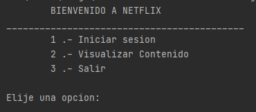
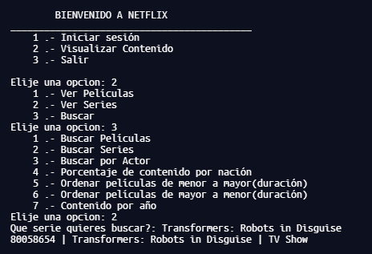
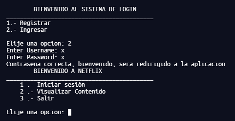
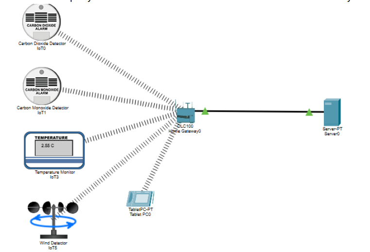
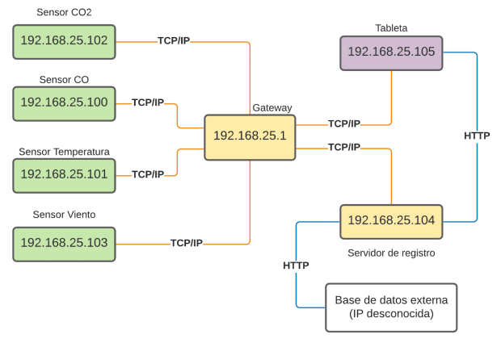
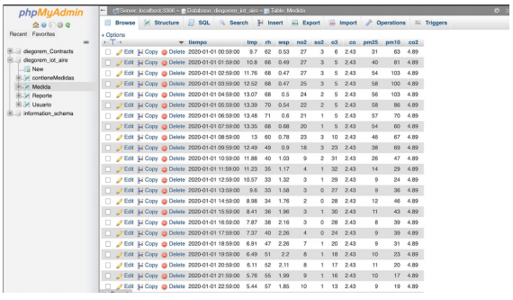

Futuro Ingeniero en sistemas
Soy un estudiante de 6to semestre de ingeniería en sistemas en el Tecnológico de Monterrey, soy una persona muy innovadora y con diversas habilidades de mucho valor aplicables para trabajos en equipo, a continuación se mostraran diferentes categorías de demostrando los lenguajes de programación que manejo en un nivel y algunas habilidades extras que tengo.
Lenguajes de programación:
- Python 50%
- C++ 70%
- JavaScript 30%
Proezas extra:

Algúnos de mis proyectos más interesantes
Derrape de auto de carreras de F1
04/12/2019
En este proyecto utilizamos varias formulas físicas y con la ayuda de Matlab pudimos simular una pista de carrea de F1 con varias curvas también tomando en cuenta el peralte de la pista y condiciones del ambiente.


POO en Netflix
25/05/2020
En mi clase de Programación orientada a objetos en C++ nos pidieron hacer una replica de una tipo base de datos de las peliculas y series de netflix y por medio de clases y objetos poder realizar búsquedas entre todo el catálogo y de diferentes maneras y con previamente un inicio de sesión validado.
  Conexión de sensores por IoT a bases de datos
07/12/2020
Por medio de la aplicación packet tracer hicimos la conexión de varios sensores que iban obteniendo datos en tiempo real donde se recolectaban en un servidor dentro de la aplicación y por medio de un código en Python los mandamos hacia una base de datos en nuestro servidor web en internet por medio de protocolos TCP/IP y HTTP y se podían consultar en una página web diseñada por nosotros. DOCUMENTO
  